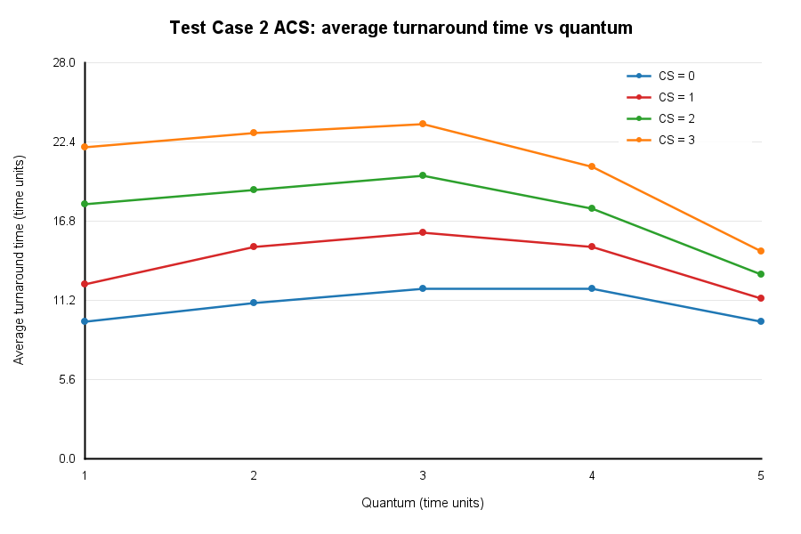
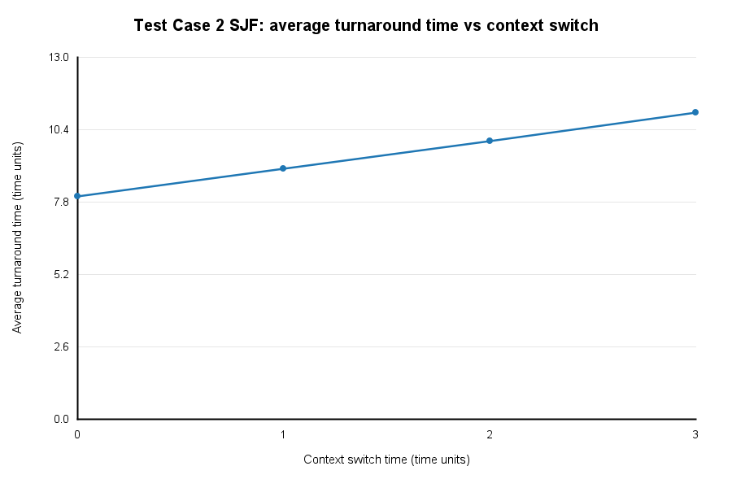
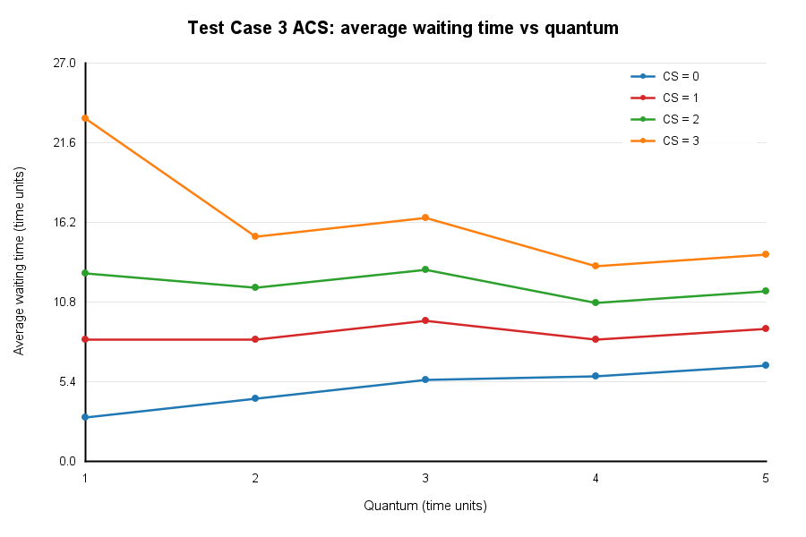
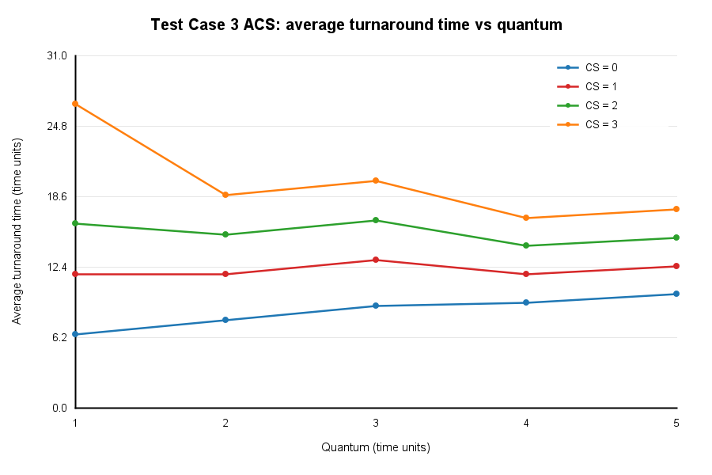
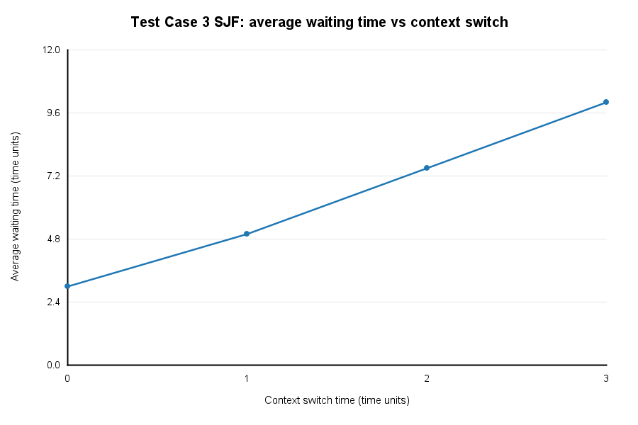
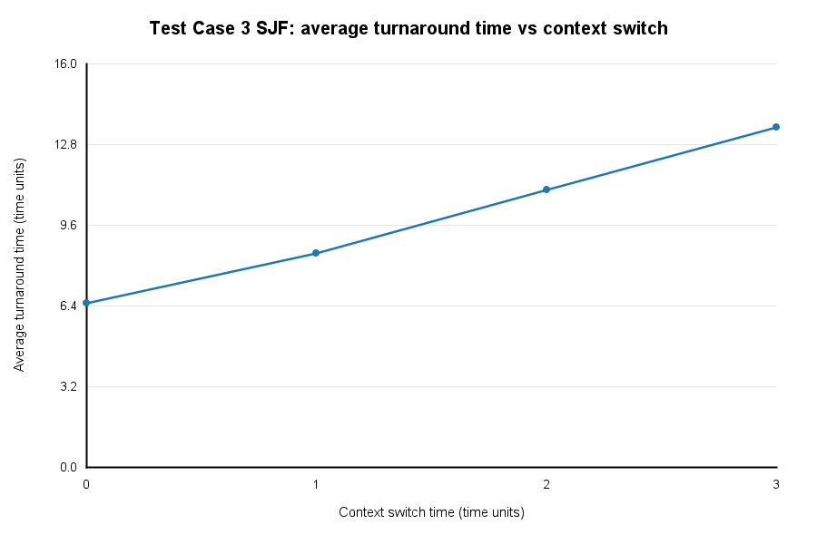
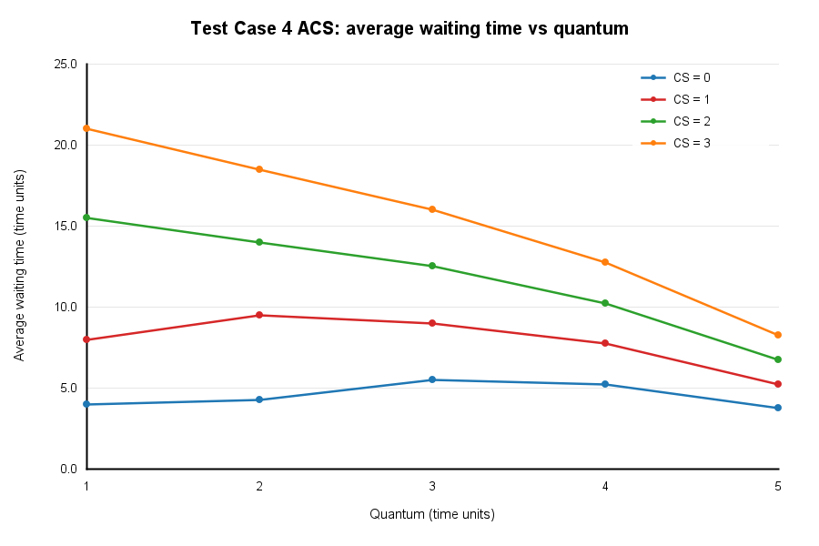
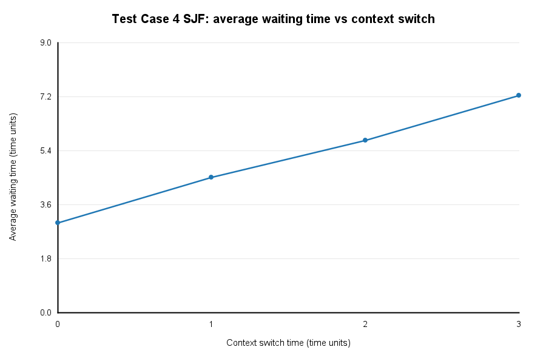

This report presents the simulation results of two CPU schedulers implemented for the assignment: Preemptive Shortest Job First (SJF) and the Adaptive Container Scheduler (ACS). The ACS uses a Round Robin (RR) queue in Tier 1, a Non-Preemptive Priority queue in Tier 2, and an aging rule in Tier 3. The report gives the test cases, the measured waiting and turnaround times for different values of the time quantum Q and the context-switch cost CS, the required graphs, and a discussion of the Tier 2 demotion trade-off between CPU utilization and response time.
Turnaround Time = Finish Time - Arrival Time. Waiting Time = Turnaround Time - Burst Time. Response Time = First Run Time - Arrival Time. Average Waiting Time and Average Turnaround Time are the arithmetic means over all processes in the test case.
All four test cases were run through the ACS with Q in {1, 2, 3, 4, 5} and CS in {0, 1, 2, 3}. Preemptive SJF was run for the same CS values. The base configuration of each test case (the Q and CS given in the test-case file) is also reported as an analysis table. The values in this report were produced by the simulator in this repository; the complete data set is stored in report/experiment-data.csv. All times are in time units.
| Process | Arrival Time | Burst Time | Initial Priority |
|---|---|---|---|
| P1 | 0 | 4 | 2 |
| P2 | 1 | 7 | 3 |
| P3 | 3 | 2 | 1 |
Base configuration: Q = 3, CS = 0.
| Process | Arrival Time | Finish Time | Turnaround Time | Waiting Time | Response Time |
|---|---|---|---|---|---|
| P1 | 0 | 9 | 9 | 5 | 0 |
| P2 | 1 | 13 | 12 | 5 | 2 |
| P3 | 3 | 8 | 5 | 3 | 3 |
| Average | 8.67 | 4.33 | |||
| Process | Arrival Time | Finish Time | Turnaround Time | Waiting Time | Response Time |
|---|---|---|---|---|---|
| P1 | 0 | 4 | 4 | 0 | 0 |
| P2 | 1 | 13 | 12 | 5 | 5 |
| P3 | 3 | 6 | 3 | 1 | 1 |
| Average | 6.33 | 2.00 | |||
| CS | Q = 1 | Q = 2 | Q = 3 | Q = 4 | Q = 5 |
|---|---|---|---|---|---|
| 0 | 2.67 / 7.00 | 3.33 / 7.67 | 4.33 / 8.67 | 3.33 / 7.67 | 3.67 / 8.00 |
| 1 | 7.00 / 11.33 | 6.33 / 10.67 | 7.33 / 11.67 | 5.00 / 9.33 | 5.33 / 9.67 |
| 2 | 11.00 / 15.33 | 9.33 / 13.67 | 10.33 / 14.67 | 6.67 / 11.00 | 7.00 / 11.33 |
| 3 | 15.00 / 19.33 | 12.33 / 16.67 | 13.33 / 17.67 | 8.33 / 12.67 | 8.67 / 13.00 |
| CS | 0 | 1 | 2 | 3 |
|---|---|---|---|---|
| Average waiting / turnaround | 2.00 / 6.33 | 3.00 / 7.33 | 4.00 / 8.33 | 5.00 / 9.33 |


At the base configuration the ACS gives an average waiting time of 4.33 and an average turnaround time of 8.67. Preemptive SJF gives 2.00 and 6.33 on the same case. SJF is better on the average because it always runs the shortest remaining job, while the ACS runs P2 for a full quantum at T = 3 and P3 for a full quantum at T = 6. P1 is demoted at T = 3 with one unit left and only runs again at T = 8, after aging lowers its effective priority from 2 to 1.
With CS = 0 the best average waiting time is 2.67 at Q = 1, and it rises to 4.33 at Q = 3. The effect of Q is not monotonic: at Q = 4 the value falls to 3.33 because the demotion pattern and the number of switches change. When CS is not zero, every switch adds overhead. For example, at Q = 3 the average waiting time grows from 4.33 at CS = 0 to 13.33 at CS = 3. A larger quantum reduces the number of switches, which is why at CS = 3 the average waiting time drops from 15.00 at Q = 1 to 8.33 at Q = 4.
| Process | Arrival Time | Burst Time | Initial Priority |
|---|---|---|---|
| P1 | 0 | 5 | 4 |
| P2 | 1 | 6 | 2 |
| P3 | 4 | 4 | 3 |
Base configuration: Q = 3, CS = 1.
| Process | Arrival Time | Finish Time | Turnaround Time | Waiting Time | Response Time |
|---|---|---|---|---|---|
| P1 | 0 | 18 | 18 | 13 | 0 |
| P2 | 1 | 15 | 14 | 8 | 3 |
| P3 | 4 | 20 | 16 | 12 | 4 |
| Average | 16.00 | 11.00 | |||
| Process | Arrival Time | Finish Time | Turnaround Time | Waiting Time | Response Time |
|---|---|---|---|---|---|
| P1 | 0 | 5 | 5 | 0 | 0 |
| P2 | 1 | 17 | 16 | 10 | 10 |
| P3 | 4 | 10 | 6 | 2 | 2 |
| Average | 9.00 | 4.00 | |||
| CS | Q = 1 | Q = 2 | Q = 3 | Q = 4 | Q = 5 |
|---|---|---|---|---|---|
| 0 | 4.67 / 9.67 | 6.00 / 11.00 | 7.00 / 12.00 | 7.00 / 12.00 | 4.67 / 9.67 |
| 1 | 7.33 / 12.33 | 10.00 / 15.00 | 11.00 / 16.00 | 10.00 / 15.00 | 6.33 / 11.33 |
| 2 | 13.00 / 18.00 | 14.00 / 19.00 | 15.00 / 20.00 | 12.67 / 17.67 | 8.00 / 13.00 |
| 3 | 17.00 / 22.00 | 18.00 / 23.00 | 18.67 / 23.67 | 15.67 / 20.67 | 9.67 / 14.67 |
| CS | 0 | 1 | 2 | 3 |
|---|---|---|---|---|
| Average waiting / turnaround | 3.00 / 8.00 | 4.00 / 9.00 | 5.00 / 10.00 | 6.00 / 11.00 |




This case exercises aging. P1 enters Tier 2 at T = 3, P2 at T = 7, and P3 at T = 11. At T = 11 the effective priorities are P1 = 4 - 2 = 2, P2 = 2 - 1 = 1, and P3 = 3 - 0 = 3, so P2 is selected instead of P1. At T = 15 the effective priorities are P1 = 4 - 3 = 1 and P3 = 3 - 1 = 2, so P1 is selected. Aging changes the Tier 2 order and prevents the high-priority-number process from dominating forever.
The ACS average waiting time is 11.00 against 4.00 for SJF, and the average turnaround time is 16.00 against 9.00. The gap is larger than in Test Case 1 because the base configuration has CS = 1 and because all three processes are demoted, so the non-preemptive Tier 2 order and aging add waiting time. Response time is still short for the first run of each process (0, 3, and 4), but P1 must wait until T = 16 to finish.
The graphs show a clear cost of context switching. At Q = 3 the average waiting time rises from 7.00 at CS = 0 to 18.67 at CS = 3. At CS = 3 a larger quantum helps: the average waiting time falls from 17.00 at Q = 1 to 9.67 at Q = 5, because fewer switches are needed. At CS = 0 the curve is not monotonic, since changing Q also changes when processes are demoted.
| Process | Arrival Time | Burst Time | Initial Priority |
|---|---|---|---|
| P1 | 0 | 6 | 5 |
| P2 | 1 | 4 | 4 |
| P3 | 2 | 2 | 3 |
| P4 | 4 | 2 | 2 |
Base configuration: Q = 2, CS = 1.
| Process | Arrival Time | Finish Time | Turnaround Time | Waiting Time | Response Time |
|---|---|---|---|---|---|
| P1 | 0 | 16 | 16 | 10 | 0 |
| P2 | 1 | 19 | 18 | 14 | 2 |
| P3 | 2 | 8 | 6 | 4 | 4 |
| P4 | 4 | 11 | 7 | 5 | 5 |
| Average | 11.75 | 8.25 | |||
| Process | Arrival Time | Finish Time | Turnaround Time | Waiting Time | Response Time |
|---|---|---|---|---|---|
| P1 | 0 | 18 | 18 | 12 | 0 |
| P2 | 1 | 12 | 11 | 7 | 7 |
| P3 | 2 | 4 | 2 | 0 | 0 |
| P4 | 4 | 7 | 3 | 1 | 1 |
| Average | 8.50 | 5.00 | |||
| CS | Q = 1 | Q = 2 | Q = 3 | Q = 4 | Q = 5 |
|---|---|---|---|---|---|
| 0 | 3.00 / 6.50 | 4.25 / 7.75 | 5.50 / 9.00 | 5.75 / 9.25 | 6.50 / 10.00 |
| 1 | 8.25 / 11.75 | 8.25 / 11.75 | 9.50 / 13.00 | 8.25 / 11.75 | 9.00 / 12.50 |
| 2 | 12.75 / 16.25 | 11.75 / 15.25 | 13.00 / 16.50 | 10.75 / 14.25 | 11.50 / 15.00 |
| 3 | 23.25 / 26.75 | 15.25 / 18.75 | 16.50 / 20.00 | 13.25 / 16.75 | 14.00 / 17.50 |
| CS | 0 | 1 | 2 | 3 |
|---|---|---|---|---|
| Average waiting / turnaround | 3.00 / 6.50 | 5.00 / 8.50 | 7.50 / 11.00 | 10.00 / 13.50 |




This case has a low-priority long process and several short processes. At T = 11, P1 and P2 are both in Tier 2. Without aging P2 (base priority 4) would run before P1 (base priority 5). Aging gives P1 5 - 2 = 3 and P2 4 - 1 = 3, a tie that is broken in favour of P1 because P1 entered Tier 2 earlier. P1 then runs from T = 12 to T = 16. This is the clearest example of aging changing the Tier 2 decision.
The ACS average waiting time is 8.25 and the average turnaround time is 11.75, while SJF gives 5.00 and 8.50. The short processes P3 and P4 still get early response times (4 and 5) because they pass through Tier 1, but P2 waits until T = 19 to finish. The SJF scheduler is better on average because it immediately favours the short remaining jobs.
The cost of CS is large in this case: at Q = 2 the average waiting time grows from 4.25 at CS = 0 to 15.25 at CS = 3. At Q = 1 and CS = 3 it reaches 23.25. The graphs show that the penalty is reduced by a larger quantum, but the improvement is not uniform, because Q also controls how quickly long processes are demoted.
| Process | Arrival Time | Burst Time | Initial Priority |
|---|---|---|---|
| P1 | 1 | 5 | 3 |
| P2 | 2 | 4 | 5 |
| P3 | 4 | 3 | 1 |
| P4 | 8 | 2 | 2 |
Base configuration: Q = 2, CS = 1.
| Process | Arrival Time | Finish Time | Turnaround Time | Waiting Time | Response Time |
|---|---|---|---|---|---|
| P1 | 1 | 16 | 15 | 10 | 0 |
| P2 | 2 | 21 | 19 | 15 | 2 |
| P3 | 4 | 18 | 14 | 11 | 3 |
| P4 | 8 | 12 | 4 | 2 | 2 |
| Average | 13.00 | 9.50 | |||
| Process | Arrival Time | Finish Time | Turnaround Time | Waiting Time | Response Time |
|---|---|---|---|---|---|
| P1 | 1 | 6 | 5 | 0 | 0 |
| P2 | 2 | 18 | 16 | 12 | 12 |
| P3 | 4 | 10 | 6 | 3 | 3 |
| P4 | 8 | 13 | 5 | 3 | 3 |
| Average | 8.00 | 4.50 | |||
| CS | Q = 1 | Q = 2 | Q = 3 | Q = 4 | Q = 5 |
|---|---|---|---|---|---|
| 0 | 4.00 / 7.50 | 4.25 / 7.75 | 5.50 / 9.00 | 5.25 / 8.75 | 3.75 / 7.25 |
| 1 | 8.00 / 11.50 | 9.50 / 13.00 | 9.00 / 12.50 | 7.75 / 11.25 | 5.25 / 8.75 |
| 2 | 15.50 / 19.00 | 14.00 / 17.50 | 12.50 / 16.00 | 10.25 / 13.75 | 6.75 / 10.25 |
| 3 | 21.00 / 24.50 | 18.50 / 22.00 | 16.00 / 19.50 | 12.75 / 16.25 | 8.25 / 11.75 |
| CS | 0 | 1 | 2 | 3 |
|---|---|---|---|---|
| Average waiting / turnaround | 3.00 / 6.50 | 4.50 / 8.00 | 5.75 / 9.25 | 7.25 / 10.75 |




This case has an idle gap at the start: the first process arrives at T = 1, so the simulator is idle at T = 0. P4 arrives at T = 8 and is the only process still in Tier 1, so it runs from T = 10 to T = 12 without being demoted. The three earlier processes are all in Tier 2. At T = 12, P1 and P3 both have effective priority 1, and P1 is selected because it entered Tier 2 earlier. P3 has base priority 1 and ages to 0 by T = 16, so it is selected before P2, whose effective priority is 3.
The ACS average waiting time is 9.50 and the average turnaround time is 13.00, against 4.50 and 8.00 for SJF. The late short job P4 is handled well by both schedulers (ACS response time 2, SJF response time 3), but the long P2 waits until T = 21 under the ACS.
The context-switch effects are strong. At Q = 2 the average waiting time rises from 4.25 at CS = 0 to 18.50 at CS = 3. At CS = 3, increasing Q from 1 to 5 reduces the average waiting time from 21.00 to 8.25. The SJF curves also grow steadily with CS, from 3.00 at CS = 0 to 7.25 at CS = 3.
The Tier 2 demotion rule is the central trade-off in the ACS. A process that exhausts its quantum is treated as CPU-bound and moved out of the Round Robin queue. This has two opposite effects.
Keeping long CPU-bound jobs out of Tier 1 means that new and short interactive jobs are not forced to wait behind a full quantum of a long job every round. The measured response times show this benefit. In Test Case 2, P2 first runs at T = 3 under the ACS but at T = 10 under SJF. In Test Case 4, P2 first runs at T = 2 under the ACS but at T = 12 under SJF. In Test Case 3, P2 first runs at T = 2 under the ACS but at T = 7 under SJF. This is the main reason for using a multi-tier scheduler for mixed workloads.
The benefit is not universal. In Test Case 1, P3 first runs at T = 3 under the ACS but at T = 1 under SJF. A short job that arrives just after another short job can be delayed by the remaining quantum of the running process. The ACS therefore improves response time for some processes but does not guarantee the best response time for every process.
Once a process is demoted, it must wait for the Tier 2 priority order and for the non-preemptive run of the selected process. In all four cases the ACS has a higher average waiting time and average turnaround time than preemptive SJF at the base configuration: 4.33 against 2.00 and 8.67 against 6.33 in Test Case 1, 11.00 against 4.00 and 16.00 against 9.00 in Test Case 2, 8.25 against 5.00 and 11.75 against 8.50 in Test Case 3, and 9.50 against 4.50 and 13.00 against 8.00 in Test Case 4. This is the price of protecting the interactive jobs and of the priority order inside Tier 2.
Aging limits this cost over time. Without aging, a demoted process with a poor base priority could wait indefinitely. With aging, its effective priority improves by one every four time units, so it eventually reaches the front of Tier 2. The change of order at T = 11 in Test Case 2 and Test Case 3 shows aging working on real data.
The simulation does not report a separate CPU-utilization metric. The CS parameter directly models time during which the CPU performs a context switch instead of executing a process, so a larger CS value represents lower useful CPU utilization for a fixed number of switches. The measured waiting and turnaround times grow with CS in every test case, which is consistent with that overhead.
Tier 2 demotion helps utilization in an indirect way. Tier 2 is non-preemptive, so a demoted process runs to completion once selected. This removes the repeated quantum expirations and switches that a pure Round Robin scheduler would produce for a long CPU-bound job. The experiments show that the penalty of a large CS can be reduced by a larger quantum: for example, in Test Case 2 at CS = 3 the average waiting time falls from 17.00 at Q = 1 to 9.67 at Q = 5, and in Test Case 4 it falls from 21.00 to 8.25. A larger quantum means fewer switches and therefore less overhead, but it also delays demotion and lengthens the time a long job occupies Tier 1.
The data shows no single Q that is best for all cases. At CS = 0, small Q values tend to give lower average waiting times (for example Q = 1 in Test Cases 1 and 3), because demotion happens early and Tier 2 can run jobs without switching. At CS = 3, larger Q values are better, because each switch is expensive. In a real system, Q should therefore be chosen together with the measured context-switch cost and the workload mix: a small Q favours short interactive jobs, while a larger Q protects throughput when switching is costly.
The implemented ACS meets the assignment requirements: Tier 1 Round Robin, Tier 2 demotion to a Non-Preemptive Priority queue, Tier 3 aging with the specified formula, context-switch accounting, and the required tier matrix and metrics. The experiments show the expected trade-off. The ACS improves the first response time of several processes compared with preemptive SJF, but it has higher average waiting and turnaround times in all four test cases. The Tier 2 demotion and aging keep CPU-bound jobs from monopolizing Tier 1 and prevent starvation, while the choice of Q and the cost of CS determine how much overhead the scheduler pays.
The input test cases are stored in test-cases/testcases.txt. The complete experiment data for all Q and CS combinations is stored in report/experiment-data.csv. The simulator source is in src/scheduler, and the experiment generator is in experiments/ExperimentRunner.java. The tier matrices for the base configurations are printed by java -cp out scheduler.Main.